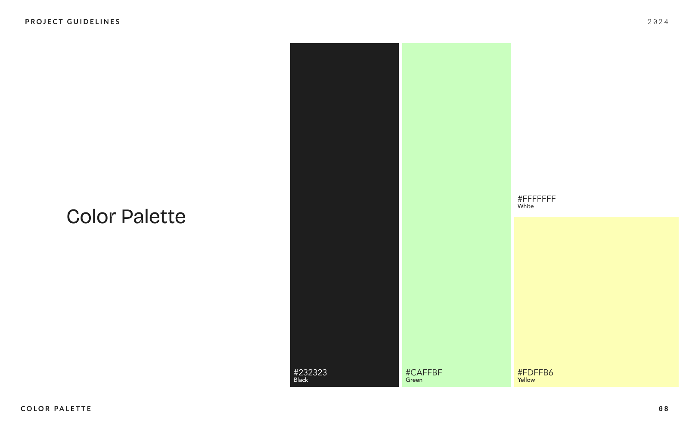
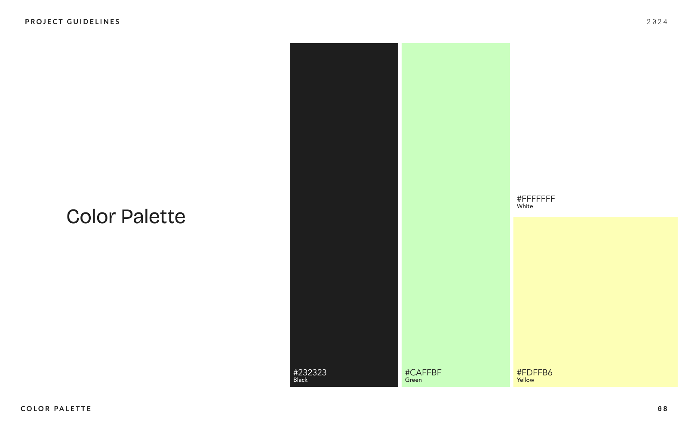

EM
Portfolio
Makeover 2024
01
Project
Overview
Project Objectives
The primary objective of the redesign was to create a personalized, clean, and accessible portfolio website. I'm a big fan of DIY projects and, by writing the code myself using HTML and CSS, I aimed to:
Reduce Costs: eliminate platform expenses.
Increase Personalization: fully customize the site to reflect my personal style and design capabilities.
Enhance Learning: gain practical experience in web development by building the site from scratch and hosting it on a GitHub repository.
Challenge
All of it beacuse I had only taken an online course in HTML and CSS so I'm very greatful to all the tutorials out there.
02
Process
Short summary of weeks of work
The redesign process involved several key stages, each critical to achieving the desired outcome:
Initial Sketches:
I began the redesign process with hand-drawn sketches to brainstorm and visualize the overall layout and structure of the website. This step helped in conceptualizing the design and identifying key elements and features to include.
Digital Prototyping:
Next, I transitioned these sketches into digital form using Figma. In Figma, I created detailed wireframes and prototypes to outline the website's structure and functionality. This step included multiple iterations to refine the design and ensure it met my aesthetic and usability goals.
Research:
Conducting extensive research was a crucial part of the process. I explored current web design trends such as:
New vibrant color schemes that give content more accent.
Super bold fonts
Accessibility Guidelines
Learning and Implementation:
To overcome my lack of coding experience, I dedicated time to learning through video tutorials and online resources. I used Visual Studio Code as my development environment, writing all the HTML and CSS code manually. This hands-on approach helped solidify my understanding of web development.
Testing:
Although I did not conduct formal user testing, I rigorously tested the website using various software tools:
Accessibility Testing: tools like WAVE and Lighthouse were used to ensure the site met accessibility standards.
SEO Testing: I used SEO audit tools to optimize the site for search engines.
Analytics: Google Analytics was implemented to monitor site performance and user interactions.
03
The problem
I did not like it
The main issues with my previous design included lack of personal style, lack of exploration, cost and customization issues.
05
Prototyping
Thank you Figma
Tools Used:
Figma: for wireframes and high-fidelity prototypes.
Visual Studio Code: for coding the website in HTML, CSS and JS.
Prototyping Process:
Wireframes: I began with low-fidelity wireframes in Figma to map out the basic layout and structure.
High-Fidelity Prototypes: these wireframes were iterated into high-fidelity prototypes, adding details such as color schemes, typography, and interactive elements.
Feedback and Iteration: while formal user testing was not conducted, I refined the prototypes based on self-assessment and feedback from peers.
Implementation: using Visual Studio Code, I translated the prototypes into functional HTML and CSS code.
06
The solution
Typography
The use of Bricolage Grotesque ensures a consistent and modern look. Its sans-serif style is both clean and versatile, suitable for a range of text sizes from headers to body content.
Color Palette
The chosen colors contribute to a cohesive and visually striking design. The black background creates a dramatic effect, while the green and yellow accents add a lively touch without overwhelming the primary content.
Accessibility
Focus States:
the CSS includes styles for focus states on interactive elements (e.g., .cv:focus), ensuring keyboard navigation is clear and intuitive.
Color Contrast:
the high contrast between the white text and the black background enhances readability. The green and yellow accents are also carefully chosen to ensure they stand out against the dark background.


 
